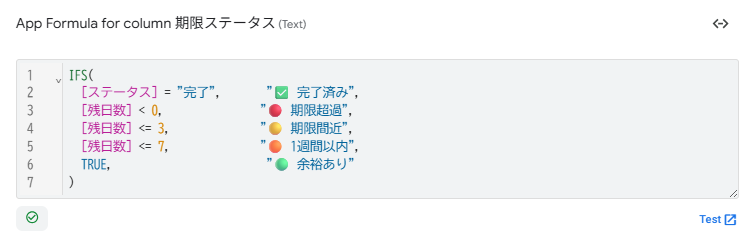
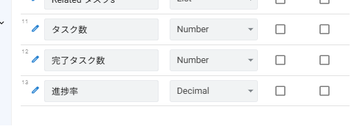

高度な関数とVirtual Column
4-1 この章で作るVirtual Columnの全体像
本章では、第2章で予告した 5つのVirtual Column を実装します。これらは SELECT / COUNT / FILTER / ROUND / IFS といった高度な関数を組み合わせて、テーブルをまたいだ集計や条件分岐 を実現するものです。
■ 作成する5つのVirtual Column
| No. | テーブル | カラム名 | 役割 |
|---|---|---|---|
| 1 | タスク | 残日数 | 期限まであと何日かを自動計算（既に過ぎていれば負数） |
| 2 | タスク | 期限ステータス | 余裕/直前/超過などのラベルを動的に判定 |
| 3 | プロジェクト | タスク数 | そのプロジェクトに紐づくタスクの総数 |
| 4 | プロジェクト | 完了タスク数 | ステータス=完了のタスク数 |
| 5 | プロジェクト | 進捗率 | 完了タスク数÷タスク数を整数の%値で表示 |
■ Virtual Column のおさらい（中級編との違い）
中級編でも Virtual Column を使いましたが、上級編ではより複雑な計算を扱います。
| レベル | 使う関数 | 例 |
|---|---|---|
| 中級編 | IFS / HOUR / TODAY() | 勤務時間 = HOUR(退勤時刻 - 出勤時刻) |
| 上級編 | SELECT / COUNT / FILTER | 進捗率 = ([完了タスク数] * 100) / [タスク数] |
- SELECT / FILTER：別テーブルから条件付きで行を取得
- COUNT：取得したリストの件数を数える
- SUM / AVERAGE：リストの合計・平均を計算
- ANY：リストから1件取り出す（第3章で既出）
4-2 上級編で使う高度な関数リファレンス
本章で使う関数を一覧にまとめます。すべての関数を覚える必要はありません。「こういう関数がある」 ということを把握しておけば、必要なときに調べて使えます。
■ リスト操作関数
| 関数 | 構文 | 説明 |
|---|---|---|
| SELECT | SELECT(テーブル[カラム], 条件式) |
条件に合う行から指定カラムの値リストを取得 |
| FILTER | FILTER("テーブル", 条件式) |
条件に合うキーのリストを取得 |
| COUNT | COUNT(リスト) |
リストの件数を返す |
| ANY | ANY(リスト) |
リストから1件取り出す（単一値に変換） |
| SUM | SUM(数値リスト) |
リスト内の数値を合計 |
| AVERAGE | AVERAGE(数値リスト) |
リスト内の数値の平均 |
| MAX / MIN | MAX(数値リスト) |
リスト内の最大値/最小値 |
■ 計算・条件判定関数
| 関数 | 構文 | 説明 |
|---|---|---|
| ROUND | ROUND(数値, 桁数) |
指定桁数で四捨五入 |
| IFS | IFS(条件1, 値1, 条件2, 値2, ...) |
複数条件の分岐（中級編で既出） |
| IF | IF(条件, 真の値, 偽の値) |
2分岐の条件式 |
| ISBLANK | ISBLANK([カラム]) |
空欄かどうかの判定 |
■ Related カラム（Refの自動生成）
第2章で説明したとおり、Ref を設定すると親テーブルに 「Related ◯◯」 Virtual Column が自動生成されています。これも実は SELECT を使って構築されたリスト です。本章ではこのリストを集計対象として活用します。
| 親テーブルでの呼び方 | 中身（実態） |
|---|---|
[Related タスクs] |
SELECT(タスク[タスクID], [プロジェクトID] = [_THISROW].[プロジェクトID]) と同等 |
[Related コメントs] |
SELECT(コメント[コメントID], [タスクID] = [_THISROW].[タスクID]) と同等 |
4-3 タスクテーブルのVirtual Column(残日数・期限ステータス)
まず、テーブルをまたがない シンプルな Virtual Column から作ります。タスクテーブル単体で完結する計算です。
■ ① 残日数
- テーブル
- タスク
- Type
- Number
- App formula
HOUR([期限] - TODAY()) / 24- 説明
- 期限から今日までの日数。期限が過ぎていれば負数になる
AppSheet では Date 型同士の引き算 [期限] - TODAY() の結果は、そのままでは 「Duration(時間差)」型 として返ります。Number 型として日数を取得するには HOUR() 関数で時間に変換し、24で割る 必要があります。たとえば期限が「2026/05/01」で今日が「2026/04/25」なら、結果は 6 になります。
[期限] - TODAY() の結果は、AppSheet 内部では時間量(Duration)として保持されます。HOUR() はこれを 「時間」 に変換します(6日 → 144時間)。これを / 24 で割ることで 「日数」 として扱えるようになります。Number 型と整合し、数値比較も可能になります。
■ ② 期限ステータス
「残日数」をもとに、余裕 / 直前 / 超過 といったラベルを動的に表示します。
- テーブル
- タスク
- Type
- Text
- App formula
- 下記
- 説明
- 残日数に応じて「余裕あり/期限間近/期限超過/完了済み」を判定
IFS(
[ステータス] = "完了", "✅ 完了済み",
[残日数] < 0, "🔴 期限超過",
[残日数] <= 3, "🟡 期限間近",
[残日数] <= 7, "🟠 1週間以内",
TRUE, "🟢 余裕あり"
)TRUE, "値" を置くと、どの条件にも当てはまらなかった場合のデフォルト値 になります。これにより、すべてのケースを網羅できます。
■ 作成手順
Data → Columns で タスク テーブルを開きます。
右上の 「+ Add Virtual Column」 をクリックします。
Column name に 残日数、App formula に HOUR([期限] - TODAY()) / 24 を入力し、Type を Number に設定して Done。
もう一度 「+ Add Virtual Column」 をクリックし、Column name に 期限ステータス、App formula に上記の IFS 式を入力し、Type を Text に設定して Done。
右上の Save をクリックして保存します。

[残日数] が認識されずエラーになります。
4-4 プロジェクトテーブルのVirtual Column(タスク数・完了数・進捗率)
ここからが上級編の本領です。プロジェクト テーブルに、子レコード(タスク)を集計した値 を持たせます。SELECT と COUNT を組み合わせます。
■ ③ タスク数
そのプロジェクトに紐づくタスクの総数を取得します。
- テーブル
- プロジェクト
- Type
- Number
- App formula
COUNT([Related タスクs])- 説明
- そのプロジェクトに属するタスクの件数
第2章で説明した 「Related タスクs」 という自動生成された Virtual Column を、そのまま COUNT に渡すだけです。これだけで、各プロジェクトの行ごとに「自分の子タスクの数」を返してくれます。
■ ④ 完了タスク数
「ステータス = 完了」のタスクだけを数えます。
- テーブル
- プロジェクト
- Type
- Number
- App formula
COUNT(SELECT(タスク[タスクID], AND([プロジェクトID] = [_THISROW].[プロジェクトID], [ステータス] = "完了")))- 説明
- ステータスが「完了」のタスクの件数
■ ⑤ 進捗率
完了タスク数 ÷ 全タスク数で進捗率(%)を計算します。タスク数が 0 のときに 0除算エラーにならないよう IF で分岐します。
- テーブル
- プロジェクト
- Type
- Decimal
- App formula
- 下記
- Display name
"進捗率(%)"- 説明
- 完了タスクの割合(0~100の整数値)
IF(
[タスク数] = 0,
0,
([完了タスク数] * 100) / [タスク数]
)1 / 5 は 0.2 ではなく 0 として計算されてしまいます。* 1.0 や DECIMAL() などの変換を試みても、この仕様の制約は回避できないケースが多いです。
そこで本マニュアルでは、先に * 100 してから割り算する ことで、整数同士の演算で正しい % 値を得る方法を採用します。
[完了タスク数] * 100→ 1 × 100 = 100 (整数)/ [タスク数]→ 100 / 5 = 20 (整数)- 結果として 「20」(% を意味する整数値)が得られる
表示は「20」のように単なる数字になりますが、Display name に "進捗率(%)" を設定 することで、カラムの見出しに「(%)」を含めて意味を明示します。
■ 作成手順
Data → Columns で プロジェクト テーブルを開きます。
「+ Add Virtual Column」 から、次の順番で3つの Virtual Column を作成します。
① タスク数（Type: Number / 式: COUNT([Related タスクs])）
② 完了タスク数（Type: Number / 式: 上記の SELECT 式）
③ 進捗率(Type: Decimal / 式: 上記の IF 式 / Display name: "進捗率(%)")
Save で保存します。

4-5 進捗率の式を分解して理解する
4-4で書いた完了タスク数の式は、上級編で最も重要な「テーブルをまたいだ集計」のパターンです。P001(勤怠管理システム改修) のレコードを例に、式の動きを段階的に追ってみましょう。
P001 のタスク数の式：
COUNT(SELECT(タスク[タスクID],
AND([プロジェクトID] = [_THISROW].[プロジェクトID], [ステータス] = "完了")
))■ サンプルデータでの計算結果
第2章のサンプルデータをベースに、各プロジェクトの計算結果を確認してみましょう。
| プロジェクトID | プロジェクト名 | タスク数 | 完了タスク数 | 進捗率(%) |
|---|---|---|---|---|
| P001 | 勤怠管理システム改修 | 5 | 1 | 20 |
| P002 | 大手企業A社向け提案 | 3 | 1 | 33 |
| P003 | 社内ワークフロー整備 | 1 | 0 | 0 |
| P004 | AI検証PoC | 1 | 1 | 100 |
| P005 | 新規顧客B社案件 | 2 | 0 | 0 |
[_THISROW] は、計算中の行を指す特別な記法です。SELECT 関数の中で [プロジェクトID] と書くと「タスクテーブルの行のプロジェクトID」を意味しますが、[_THISROW].[プロジェクトID] と書くと「計算中のプロジェクトテーブルの行 のプロジェクトID」を意味します。この使い分けが、テーブルをまたいだ集計のキモです。
4-6 動作確認とまとめ
■ 事前準備:ビューにVirtual Columnを反映/プロジェクト一覧ビューの作成
本章で追加した Virtual Column を画面で確認するには、ビューに表示する設定が必要です。第3章で作成した タスク一覧ビューに期限ステータスを追加 し、新たに プロジェクト一覧ビュー も作成します。
① タスク一覧ビューに「期限ステータス」を追加
左メニューの 📱 Views から、第3章で作成した タスク一覧 ビューを開きます。
View Options → Column order セクションで、「+ Add」 をクリックします。
期限ステータス を選択して追加します。並び順は「期限」の右に置くのがおすすめです(順序を変えたい場合は一度削除して入れ直し)。
Save をクリックして保存します。
② プロジェクト一覧ビューを新規作成
📱 Views → + Add View → Create a new view をクリックします。
次の通り設定します。
・View name:プロジェクト一覧
・For this data:プロジェクト
・View type:table
・Position:menu
View Options → Column order で次の順に追加します。
プロジェクトID → プロジェクト名 → カテゴリID → 担当PM → ステータス → タスク数 → 完了タスク数 → 進捗率
Sort by を ステータス の Ascending(昇順)に設定すると、計画中→進行中→完了→中止の順で並びます。
Save をクリックして保存します。プレビューの下部メニューに「プロジェクト一覧」が追加されているはずです。
"進捗率(%)" としているため、カラムの見出しに「(%)」を含めて表示されます。第6章では、この進捗率に プログレスバー(進捗バー) を付けて、より見やすくする方法を扱います。
■ 確認チェックリスト
- タスクテーブルに 残日数(Number)と 期限ステータス(Text)のVirtual Columnが追加されている
- プロジェクトテーブルに タスク数(Number)、完了タスク数(Number)、進捗率(Decimal)のVirtual Columnが追加されている
- タスク一覧ビュー の Column order に 期限ステータス が追加されている
- プロジェクト一覧ビュー(Table View) が作成され、下部メニューに表示されている
- タスク一覧で、未完了のタスクには「🔴 期限超過」「🟡 期限間近」などのラベルが表示される
- 完了済みタスクの期限ステータスは「✅ 完了済み」と表示される
- プロジェクト一覧で、各プロジェクトのタスク数・完了タスク数・進捗率が表示される
- P001は20、P004は100、P003は0などの進捗率が正しく表示される
■ この章で作成したVirtual Column一覧
| No. | テーブル | カラム名 | Type | App formula |
|---|---|---|---|---|
| 1 | タスク | 残日数 | Number | HOUR([期限] - TODAY()) / 24 |
| 2 | タスク | 期限ステータス | Text | IFS([ステータス]="完了","✅ 完了済み", [残日数]<0,"🔴 期限超過", ...) |
| 3 | プロジェクト | タスク数 | Number | COUNT([Related タスクs]) |
| 4 | プロジェクト | 完了タスク数 | Number | COUNT(SELECT(タスク[タスクID], AND(...))) |
| 5 | プロジェクト | 進捗率 | Decimal | IF([タスク数]=0, 0, ([完了タスク数]*100)/[タスク数]) |
■ 第4章のまとめ(中級編との違い)
| No. | 上級編で新しく扱ったポイント | 使った仕組み |
|---|---|---|
| 1 | テーブルをまたいだ集計 | SELECT + COUNT で子レコード集計 |
| 2 | 「自分の行」の参照 | [_THISROW].[カラム名] で計算中の行を参照 |
| 3 | 自動生成Relatedカラムの活用 | [Related タスクs] でシンプルに集計 |
| 4 | 整数同士の演算で%値を取得 | 先に*100してから/することで0除算とDecimal問題を回避 |
| 5 | 複数Virtual Columnの依存関係 | 残日数→期限ステータス、タスク数→完了数→進捗率の順 |